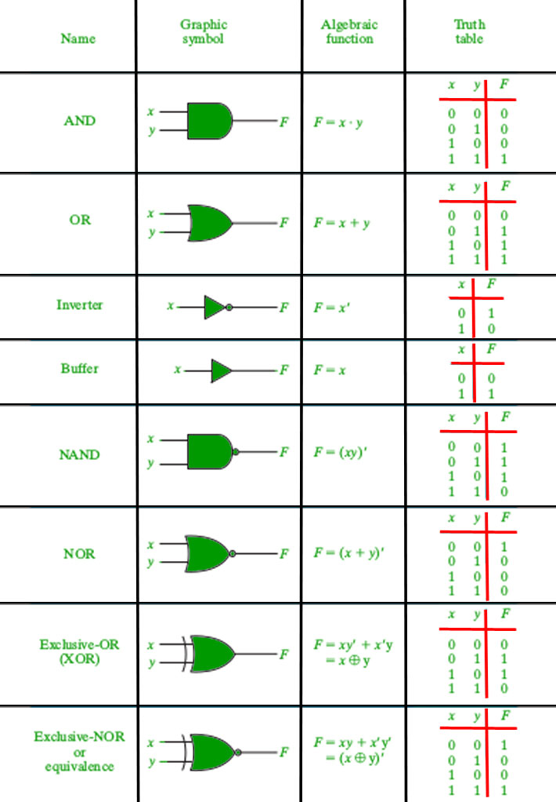
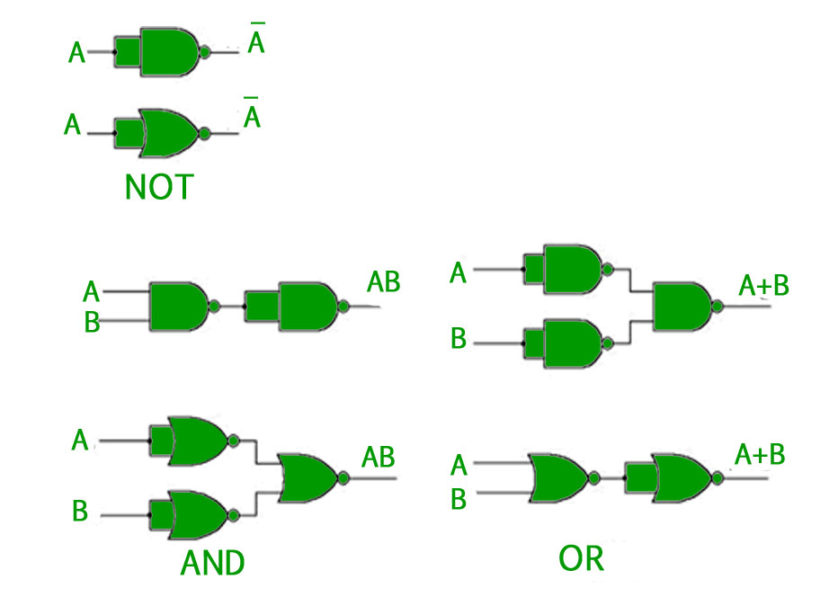
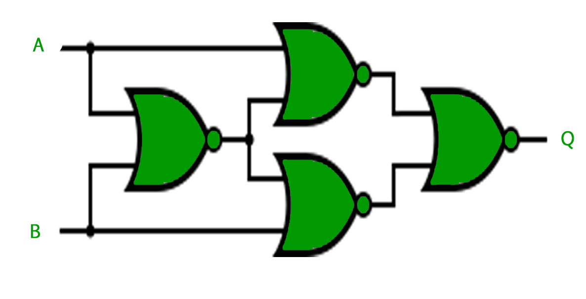

在布尔代数中，有三种基本操作，  这类似于命题逻辑中的析取，连接和否定。 这些操作中的每一个都具有相应的逻辑门。 除此之外，还有一些其他逻辑门。
这类似于命题逻辑中的析取，连接和否定。 这些操作中的每一个都具有相应的逻辑门。 除此之外，还有一些其他逻辑门。
逻辑门 -
- AND门（。） -如果两个输入都是1，AND门给出1的输出，否则给出0。
- 或门（+） -如果两个输入中的任何一个为1，则或门给出1的输出，否则给出0。
- NOT gate（'） - NOT门给出1输入的输出为0，反之亦然。
- 异或门（ ） -如果两个输入不同，则异或门给出1的输出，如果它们相同则给出0。
如果上述门的输出被否定，则获得三个以上的逻辑门。
- 与非门（ ） -如果两个输入都为0，则与非门（否定AND）给出1的输出，否则给出1。
- NOR门（ ） -如果两个输入都为0，NOR门（否定OR）给出1的输出，否则给出1。
- XNOR门（ ） - XNOR门（否定XOR）给出输出1，两个输入相同，如果两者不同，则输出0。
每个逻辑门都有一个与之关联的图形表示或符号。 下面的图像显示了与每个逻辑门相关的图形符号和真值表。

通用逻辑门 -
在上面讨论的七个逻辑门中，NAND和NOR也称为通用门，因为它们可以用于实现任何数字电路而不使用任何其他门。 这意味着每个门只能由NAND或NOR门创建。
使用NAND和NOR门实现三个基本门如下所示 -

对于XOR门 ，NAND和NOR实现是 -
- 使用NAND实施-

- 使用NOR实现-

注 -为了实现XNOR门，可以在上述电路中添加单个NAND或NOR门，以抵消XOR门的输出。
GATE CS Corner问题
练习以下问题将帮助您测试您的知识。 所有问题都是在前几年的GATE或GATE Mock Tests中提出的。 强烈建议您练习它们。
1. GATE CS 2013，问题21
2. GATE CS 2012，问题10
3. GATE CS 2007，问题33
4. GATE CS 2005，问题15
参考 -
数字设计，莫里斯马诺和Michael Ciletti的第5版